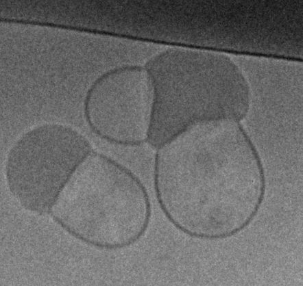
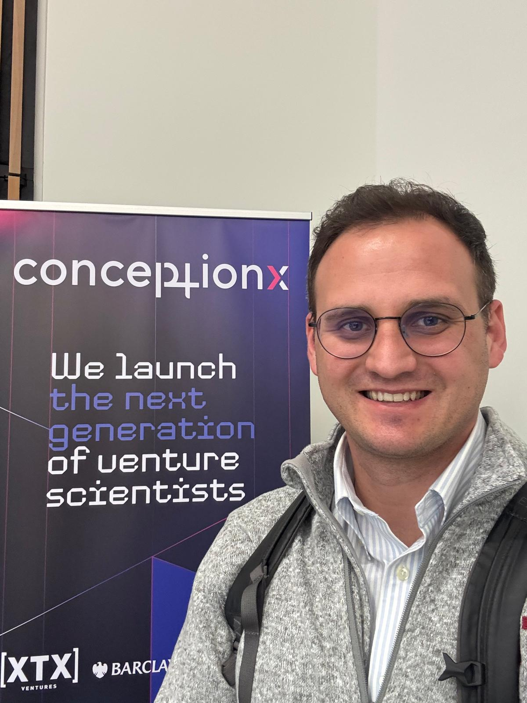
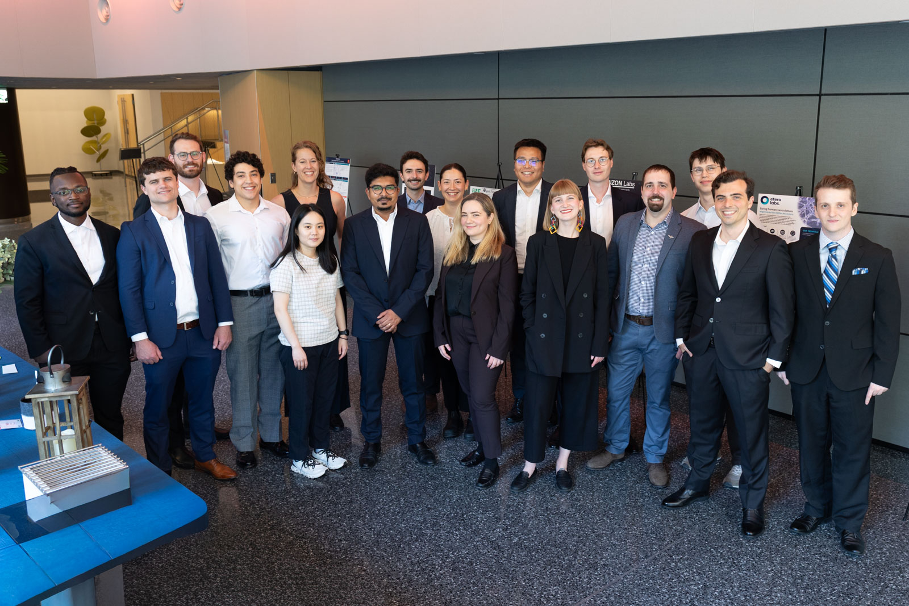
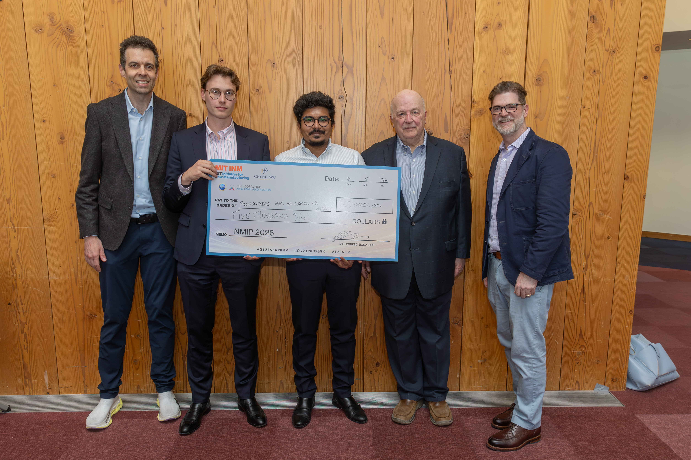
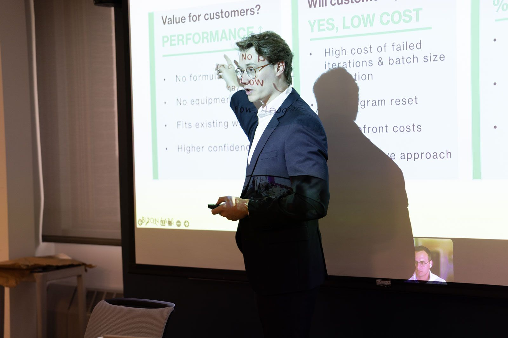
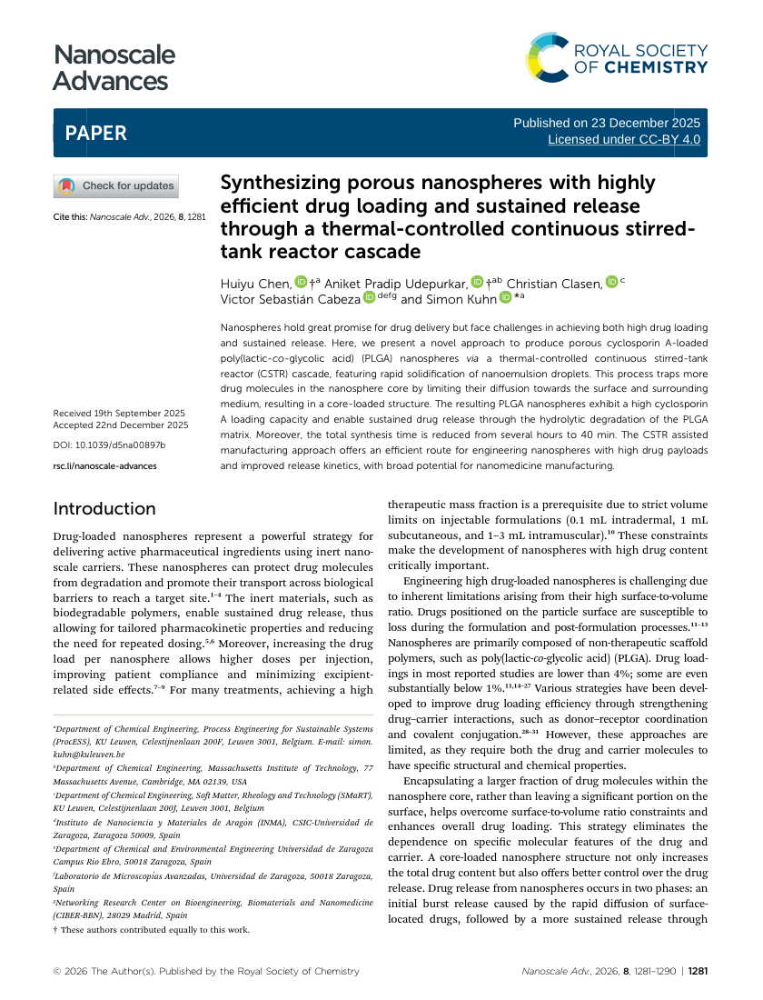

Particle Design
Building LNPs around desired properties from the beginning.
Next-generation lipid nanoparticles
Biotechnology
Lipid nanoparticles have made a new generation of medicines possible. Yet delivery remains one of biotechnology's defining challenges.
BIZON Labs is building a new approach to LNP design, grounded in the belief that particles can be engineered with more precision, flexibility, and purpose.
The name BIZON is a nod to bison, which are known for turning into a storm and moving through it rather than away from it. We take the same posture in science: walking directly toward hard delivery challenges with focus, patience, and conviction.
We are working toward particles designed around the properties we want them to have, with a focus on control, flexibility, and biological performance.
Particle design
Our work sits at the interface of formulation, structure, and delivery biology.





Approach
Rather than treating formulation as an empirical search problem, BIZON is developing a more intentional framework for particle design. Our work focuses on understanding and shaping the physical properties that influence how LNPs behave.
Building LNPs around desired properties from the beginning.
Exploring how process innovations can influence LNP architecture.
Mapping the relationship between LNP architecture and complex biological systems.
Developing with real-world therapeutic applications in mind, and scalable by design.
Scientific Expertise




Conversations
We welcome conversations with collaborators, investors, and strategic partners whose work touches formulation, characterization, translation, or delivery.
The Herd
BIZON Labs is led by co-founders Peter Sagmeister, Aniket Udepurkar, and Cedric Devos, bringing together experience across formulation, self-assembly, translational science, company formation, and biotechnology operations, with support and mentorship from a broader group of scientific, clinical, and company-building advisors.
Co-founder & Chief Executive Officer
Founder and company builder with experience advancing biotechnology platforms.
Co-founder & Chief Technology Officer
Scientist focused on formulation, materials, and differentiated particle design.
Co-founder & Chief Operating Officer
Operator and scientist supporting company strategy, execution, and external partnerships.
Contact
We welcome conversations with people interested in the future of lipid nanoparticle technology.
office@bizonlabs.com